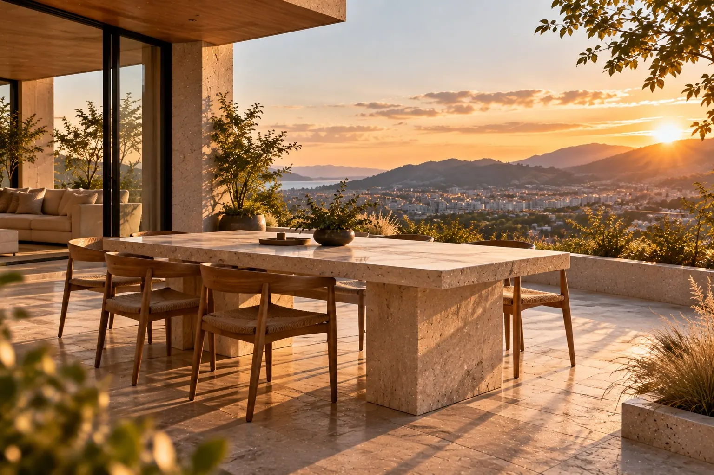
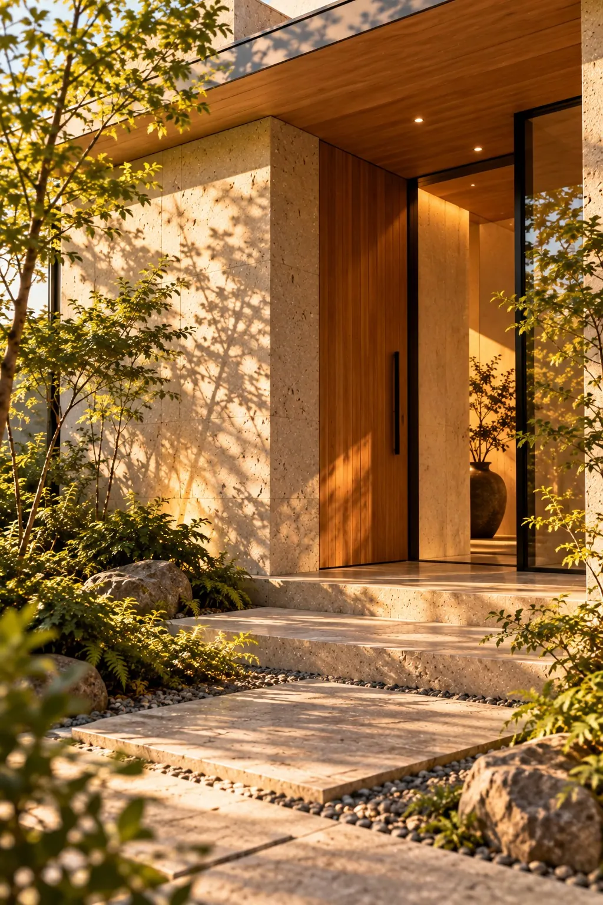

About RENOVA について
設計者と職人が、同じテーブルで考える。
RENOVA は、Nook Design がポートフォリオ用に制作した架空のブランドです。実在する同名・類似名の企業や団体とは関係ありません。

01Brand message
ブランドメッセージ
住まいを、作品に。
それは、豪華にすることではなく、その人とその場所にしかない答えを見つけること。
RENOVA という名前には、「新しくする（renovate）」と「新しい星（nova）」の二つの意味を込めています。すでにある住まいの中に、まだ誰も気づいていない輝きを見つけ出す。それが私たちの仕事です。

03Attitude
設計に対する姿勢
- i.
聞くことから始める
要望の言葉の奥にある「なぜ」を、時間をかけてうかがいます。
- ii.
現場で確かめる
図面だけで決めず、光や寸法を現場で確認しながら判断します。
- iii.
できないことも伝える
構造や予算の制約は早めに共有し、代わりの方法を一緒に考えます。
- iv.
完成後も付き合う
住み始めてからの困りごとや、素材の手入れの相談にも応えます。
04Profile
会社概要
架空のブランドのため、所在地・電話番号などは掲載していません。
05Area
対応エリア
設計者が現場に通える範囲として、次のエリアを想定しています（架空の設定です）。
Contact
住まいのこと、設計者に直接話してみませんか。
最初のご相談は、設計者がお話をうかがいます（デモのため、実際には送信されません）。